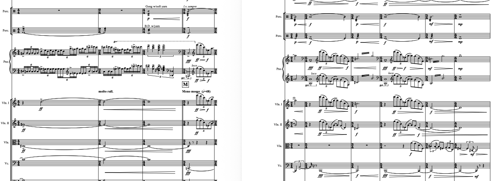

The work’s title is pulled directly from a line in The Last Love, a poignant poem by the celebrated Russian romantic poet Fyodor Tyutchev (1803–1873). In his poem, Tyutchev reflects on the intense, late-stage glow of an autumn romance, famously equating human emotion to a dual landscape where “the waves roll on, thundering and shimmering.” Dangerfield translates this literary imagery into sound, crafting an auditory space that balances bleak stasis with sudden, volatile energy.
Musically, the piece opens by projecting a stark, somewhat desolate sense of stillness. From this initial quietude, Dangerfield weaves a delicate yet massive sonic web. Melodic fragments begin to tear through the texture, giving way to explosions of glistening timbres and highly resonant acoustic clusters. The piano leads this narrative charge, supported by a precisely balanced “symphonic complementation” of single-part instruments and an active duo of percussionists. Rather than relying on traditional harmonic progressions, the piece relies on shifts in color, texture, and light, mimicking the unpredictable swelling, breaking, and eventual fading of massive oceanic waves.
The Waves Roll On, Thundering and Shimmering served as Dangerfield’s doctoral dissertation. It was commissioned by the Centre for Contemporary Music and the Studio New Music Ensemble at the Moscow Conservatory, with funding in part from a Capitol One Endowment for Faculty Research and Development, and premiered on 22 April 2006 in Rachmaninoff Hall at the Moscow Conservatory by the Studio New Music Ensemble, conducted by Igor Dronov.